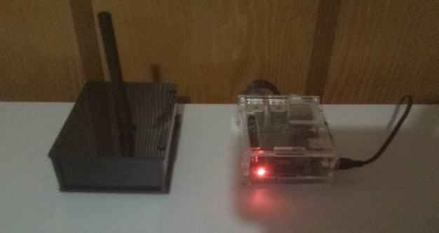
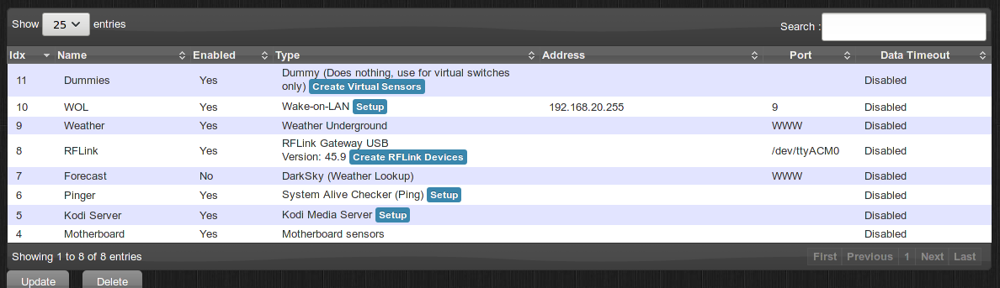
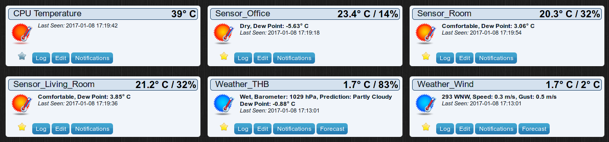
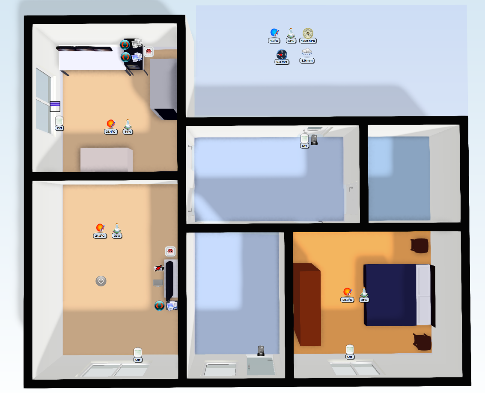
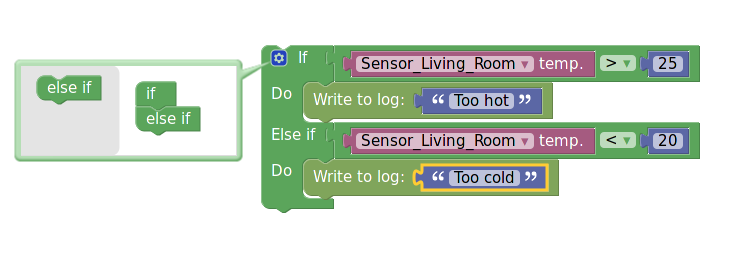

As you may remember, I started going into Home Automation last year with a C++ project, Asgard.
Unfortunately, I haven't add the time to improve this project further and make
it really useful and I have so many C++ projects already, so I decided to switch
to using an existing project.
Choice
I needed a system that was at least able to handle everything my existing system
does:
- Control my RF-433 Temperature Sensors (Oregon Temperature Sensors)
- Control my RF-433 Remote Button
- Control my smart power outlets
- Ping and wake-on-lan my different computers
- Be installable on a Raspberry Pi
- Control Skadi/Kodi Home Cinema
Of course, it also had to be open source and in a language that I can write
without agonizing pain (no Ruby, no JavaScript, ideally no Python (I hate a lot
of languages...)).
It's impressive the number of home automation projects that exist today. It's
really a hot topic, more than I though. After a few hours of research, I've
finally settled on Domoticz. It seemed that it could handle all my home
automation devices that I already had. Domoticz is an open source home
automation system. It's written mainly in C++, which is an advantage for me
since I'll be able to work inside it if necessary. It has a quite modern HTML5
interface. It has a lot of support for hardware and a lot of bridges for other
controllers as well. One of the reason I chose it is also the floor-planner
feature that looks really cool.
Installation
First of all, I cleaned the hardware of my Raspberry Pi. I got rid of my
breadboard and the components on it. Then, I put the Raspberry Pi on a nicer box
that I had laying around. One problem with Domoticz is that it does not support
directly RF433 devices, but need a controller in the middle. At first,
I believed I could simply connect them through GPIO and lets Domoticz do the
rest, but it's not possible. I ordered the different pieces for a RFLink
controller at nodo-shops. It is running on a Arduino Mega and is connected to
the Pi. The very big advantage is that they handle a lot of protocols directly,
so you only have to read the serial port to get information on RF-433 events.
Here is how the current system look:

The black box is the Arduino Mega with RFLink software while the Transparent is
simply the Raspberry on which Domoticz is installed.
As for the installation of Domoticz, it's really simple. They also have images of
Raspberry Pi directly, but since my Raspberry was already installed with
Raspbian, I installed Domoticz on it directly. A simple matter of curl and bash:
sudo curl -L install.domoticz.com | sudo bash
After a few questions, your installation should be complete. You can browse your
Domoticz installation at the IP of your Pi and at the given port.
Home Automation with Domoticz
There are several concepts in Domoticz that are important. At first, it seemed
a bit weird to me, but in the end it works really well and you get used to it
pretty fast.
The first concept is the hardware. It is not necessary hardware directly, but
rather a driver to some piece of information of switches than a real hardware in
my opinion. For instance, the RFLink Gateway is considered hardware as well as
the Forecast weather API. Here is all the hardware I've configured:

I've got some sensors from the motherboard, the Kodi interaction, the driver to
ping the different computers, the Forecast weather with Dark Sky and Weather
Underground, the RFLink communication, the wake-on-lan and some dummies virtual
switches.
On its own, an hardware is useless, but it can create devices that will be used
for home automation. A device is sub device of a particular driver. In some
cases, the devices will be created automatically. For instance, RF Link can
create devices as soon as they are detected. For wake-on-lan, you have to
configure MAC Addresses and they will be added as devices. And so on...
There are a lot of types of devices, also called switches. Some devices can do
some actions, for instance the wake-on-lan devices, while others are information
based such as ping or temperature sensors detected from the RFLink. For
instance, here are my temperature sensors:

As for my hardware I already had, I haven't add too many issues with them. The
Oregon Temperature Sensors worked out of the box without any issues as well my
old RF433 Ninja Block temperature sensor. The smart power outlets have been
pretty easy to use as well. The most problem I've add was with the remote
buttons. It seems to many that it should be the easiest, but RFLink has a lot of
problem with them, they are detected several times and are highly unreliable.
Interestingly you can also change the icon of most device to a large variety of
existing devices so that they would look more realistic.
Another feature I find pretty cool is the floor plan. You can create plans for
each floor of your house and then create rooms inside and finally attach devices
to each room and place inside the plan. Unfortunately, to draw the plan, you'll
have to use an external tool. I've used floorplanner for this, but you may use
any plan you have as long as you have an image.
Here is my floor plan with the devices (the scale is terribly off :P) :

With that you can directly see the status of each of your sensors in each room.
Moreover, you can also activate some devices directly from the floor plan as
well :)
Normally, my Somfy blinds are supposed to work with the RFLink controller.
I have managed to control my blinds but only when the RFLink was within 50
centimeters of the Blinds, which is clearly not acceptable. I don't know from
where the problem comes. It may come from my Blinds controller inside the wall
or may come from bad antenna of the RFLink or from a bug in RFLink, so from now
I cannot control my blinds.
I have several D-Link cameras at home. You can also add cameras to Domoticz, but
don't expect a lot of support on this side. It's pretty poor indeed. The only
useful you can do in Domoticz with Cameras is to take a screenshot from them.
You cannot control the Camera or even have a decent video stream and cannot do
motion detection directly. I hope that the Camera support will improve in the
future. One thing that would be good is to add a view of the cameras in the
floor plan, but it is not possible currently.
What I did is to use Zoneminder to manage the cameras and send alert to Domoticz
when motion is detect with the REST API of Domoticz. Unfortunately that means
two systems to manage the Cameras. Zoneminder is a very good piece of software,
but one of the ugliest I've ever seen (even I can do a better web interface...)
and quite obscure to configure. But the numbers of cameras it can handle and the
capabilities to control the camera is very very powerful.
Events and actions
No home automation system would be complete without an events and rules system.
In Domoticz, you have several ways to create rules.
The first solution is to create group. A group is simply a set of switches that
are all activated together. This is pretty limited, but can be useful. The
second solution is a scene. A scene is activated by a device and can set several
switches to on or off after the activation. The problem with this is that you
have to listen for an action as activation, you cannot use an existing device or
a rule with a value. For me, these two possibilities are way too limited and
I don't really a reason to use them.
The best solution is to script an handler. For that, there are two ways, either
you define visually your script with blocky, for instance:

This seemed so cool that I wanted to do all my rules with that. Unfortunately,
it is really limited. The main limitation is that you cannot nest if blocks. In
fact the interface lets you do, but it doesn't work afterwards. The other
limitation is that it has no notion of time. For instance, it's very hard to
create an action if a computer is shutdown for more than 60 seconds. You can do
it, but you end up creating virtual devices which are turned off after some
delay and it gets really complicated really soon...
In the end, I used Lua script directly. These scripts have the information about
the last values of each device and the last updated time as well. It's much
easier with that to create powerful rules especially when you want a notion of
time. There are plenty of examples on the Domoticz forum about very powerful
rules that you can create. Unfortunately, there are some limitations. For
instance, you cannot send several actions to the same device in the same script
Moreover, you also have to decode the values of the sensors yourself. For
instance, for a temperature and humidity sensor, you'll have to parse the values
and extract the one you need by hand.
So far, I haven't created many rules, only four. The first rule is that with the
push of one remote button I can power on my smart socket and turn on one of my
computers in my office. Then, if both the computers on this smart sockets have
been off for more than 60 seconds, the power is shut off on the smart socket.
And I have done almost the same for my media center and TV in my living room.
In the future, I'll probably only use the Lua scripting capability. In my
opinion, it's better to have all the scripts in the same language for
maintainability reasons. Once my futures devices arrive, I'll have a few more
rules to code.
Conclusion
To wrap up, I'd say that I'm pretty satisfied with my new home automation system
with Domoticz. It's not a perfect tool, but it has a lot of features and is
working quite well in general. I would recommend you to try it if you want
a good home automation system, fully featured and relatively easy to use.
I've several more things planned for this system. I plan to test a real motion
sensor rather than rely only on the cameras which are focused on the doors and
windows. I also plan to add an outdoor temperature sensor. And more
interestingly, I'm going to try to integrate smart bulbs from Milight to be able
to control my lights from the system. These are the shot term projects that
I want to do, but I have many more ideas!
I'm also sure that there are some features from Domoticz that I have overlooked
or not discovered.
I'll probably write more posts on Home Automation on the coming months.
For more information on Domoticz, you can consult
the official Domoticz website.